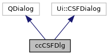

|
ACloudViewer
3.9.3
A Modern Library for 3D Data Processing
|
|
ACloudViewer
3.9.3
A Modern Library for 3D Data Processing
|
Dialog for qCSF plugin. More...
#include <ccCSFDlg.h>


Public Member Functions | |
| ccCSFDlg (QWidget *parent=0) | |
| Default constructor. More... | |
Protected Slots | |
| void | saveSettings () |
| Saves (temporarily) the dialog parameters on acceptation. More... | |
Dialog for qCSF plugin.
Definition at line 13 of file ccCSFDlg.h.
|
explicit |
Default constructor.
Definition at line 16 of file ccCSFDlg.cpp.
References class_threshold, cloth_resolution, MaxIteration, and saveSettings().
|
protectedslot |
Saves (temporarily) the dialog parameters on acceptation.
Definition at line 29 of file ccCSFDlg.cpp.
References class_threshold, cloth_resolution, and MaxIteration.
Referenced by ccCSFDlg().